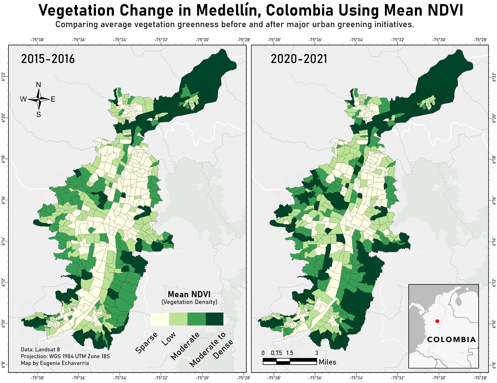
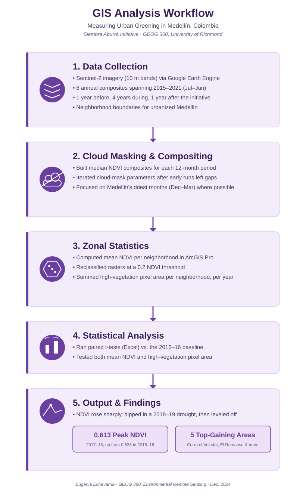

Case study · 2024
Man-Made Green: An Analysis of Urban Planning and Sustainability in Medellín
Using Sentinel-2 NDVI time series in Google Earth Engine and ArcGIS Pro to measure whether Medellín's Siembra Aburrá greening initiative actually increased vegetation across the city's neighborhoods.

The question
Medellín's Siembra Aburrá initiative set out to plant vegetation and expand green space across the city, and the Ministry of the Environment reports having planted over 1.2 million trees since the project began. But the city has never published clear, year-by-year results, making it hard to know whether the initiative actually increased vegetation, and where. I set out to answer that question independently, using remote sensing rather than relying on the city's own reporting.
What I did
I used Google Earth Engine to build cloud-masked, median NDVI composites from Sentinel-2 imagery (10 m spatial resolution) for six twelve-month periods running July through June, from 2015 to 2021: one year before the initiative began, four years during its active phase, and one year after. My first attempt at cloud masking left large data gaps once the rasters reached ArcGIS Pro, so I went back into the Earth Engine script and revised the cloud-cover parameters before re-exporting.
In ArcGIS Pro, I ran Zonal Statistics against a shapefile of Medellín's urbanized neighborhoods to calculate mean NDVI for each neighborhood, each year. I also reclassified each raster using a 0.2 NDVI threshold to flag "high-vegetation" pixels, then summed that area per neighborhood to track vegetated area independently of the mean. Finally, I ran paired t-tests in Excel comparing the 2015–16 baseline year against each of the five following years, for both the mean NDVI and the high-vegetation pixel area.

What I found
Mean NDVI across Medellín rose from 0.538 in 2015–16 to a peak of 0.613 in 2017–18, the year immediately following the start of the initiative, a highly significant increase (p = 3.15 × 10⁻⁹⁵). NDVI then dropped to 0.564 in 2018–19, the one year where the change versus baseline came closest to non-significance, before leveling off around 0.59–0.60 through 2020–21. The high-vegetation pixel area told the same story, rising from about 93.7 km² to a peak of 100.5 km² in 2017–18 (p = 4.69 × 10⁻³⁹), then dropping to 93.8 km² in 2018–19, the only year that was not significantly different from the 2015–16 baseline by that measure.
The 2018–19 dip lines up with the onset of an El Niño drought phase that Colombia's IDEAM had already flagged by late 2018. The neighborhoods with the largest vegetation gains, both across the full study period and at the 2017–18 peak, included Cerro el Volador, El Remanso, and Cerro Nutibara.
What I learned
This project taught me that a remote sensing workflow rarely works on the first pass, revising the Earth Engine cloud mask after the initial export failed was a necessary step, not a detour. I also learned the limits of NDVI as a single metric: it can't distinguish newly planted saplings from existing vegetation, or separate a genuine greening signal from the effects of a drought year. Trying to evaluate a public initiative that publishes almost no disaggregated data of its own reinforced how much independent, transparent measurement matters, and how easily a single metric like NDVI can be over-interpreted without acknowledging its limitations in fragmented urban environments.
Deliverables
- Full Research Paper (PDF) → Written for GEOG 360: Environmental Remote Sensing, Dr. Stephanie Spera, Fall 2024.
- Maps → NDVI Analysis of Medellin's Green Corridors Project.
- Works Cited → Full reference list, including sources on Siembra Aburrá and Medellín's 2018–19 drought conditions.